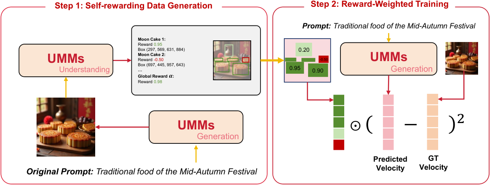
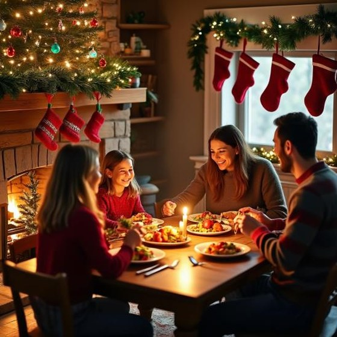
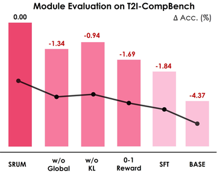
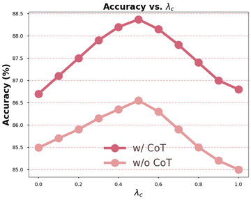
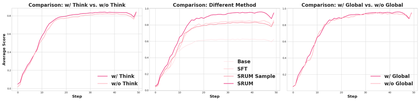

T2I-CompBench
82.18 → 88.37
Self-rewarding post-training for unified multimodal models
A model that can understand “red banana on yellow apple” may still generate the swapped pair. SRUM closes that gap by turning the understanding module into an internal rewarder for generation — without extra human labels.
* Equal contribution · The University of Hong Kong · Peking University
82.18 → 88.37
43.82 → 46.75
~6K offline samples
None for rewards
Unified multimodal models (UMMs) share one stack for vision-language understanding and generation. In practice, strong understanding often fails to transfer: the model can describe a scene correctly, yet still violate color binding, spatial order, or world knowledge when asked to draw it. SRUM treats that mismatch as a training signal.
| Question | How SRUM answers it | |
|---|---|---|
| Q1 | Can understanding supervise generation without human preference data? | Offline self-rewarding: freeze understanding as evaluator; update generation / flow only. |
| Q2 | What reward structure is rich enough for images? | Global layout score α gates a local region map R (object-level fidelity). |
| Q3 | Does the signal transfer beyond one diagnostic? | Composition (CompBench) and reasoning-informed T2I (ReasonBench) both improve on BAGEL. |
Numbers below are paper cells on BAGEL. This page does not regenerate them.
A UMM may correctly parse “red banana on yellow apple” while generating the swapped binding. The failure is executable, not merely linguistic.
Global α checks whole-image alignment; local R paints region scores into boxes so object errors are not washed out by an image-level average.
BAGEL + SRUM (CoT) reaches 88.37 CompBench overall and 46.75 ReasonBench average, without extra human reward labels.

L = L_r + λ_c · L_ref , λ_c = 0.5
L_r is reward-weighted flow matching; L_ref is the reference
constraint (not an extra KL term). Details: method.md.
| Item | Value |
|---|---|
| Optimizer | AdamW |
| Learning rate | 2.5×10−5 |
| Warmup | 500 steps |
| Grad clip | 1.0 |
| λc | 0.5 |
| Code | srum/ + Bagel/ |
| Model | Overall |
|---|---|
| Bagel | 82.18 |
| Bagel (CoT) | 84.46 |
| Bagel + SRUM (CoT) | 88.37 |
| Model | Average |
|---|---|
| Bagel | 43.82 |
| Bagel + SFT | 45.37 |
| Bagel + SRUM | 46.75 |
Full category tables (color, shape, spatial, numeracy, entity, idiom, …) live on the Hugging Face model card and in the arXiv paper.
Drag the handle. Filtered poster pairs, not a benchmark mean. Left is Base, right is SRUM.

Base SRUM


Main paper benches are CompBench and ReasonBench. The BAGEL stack also ships scripts for
GenEval, WISE, ImgEdit, GEdit, KRIS, and RISE under Bagel/eval/ —
useful when comparing UMM post-training more broadly. Protocol notes:
evaluate.md.
@inproceedings{jin2026srum,
title={Srum: Fine-grained self-rewarding for unified multimodal models},
author={Jin, Weiyang and Niu, Yuwei and Liao, Jiaqi and Duan, Chengqi and Li, Aoxue and Gao, Shenghua and Liu, Xihui},
booktitle={European Conference on Computer Vision},
pages={675--691},
year={2026},
organization={Springer}
}